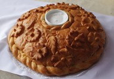

China
China is a country that is talked about a lot today. It is one of the most populous countries on the planet and the economy is growing extremely rapidly.
Another side of China is the country’s 5000 years of culture and history. The Chinese language has been around for 4000+ years and continues to evolve. The origins of the Chinese written language come from runes written on bones. The runes were pictographs of things that the ancient Chinese saw in everyday life, such as the sun and moon. A person could spend a lifetime studying the language and culture of China. Throughout its history the country has been made up of warring tribes, a democratic republic, a monarchy and a communist state. The culture is deep and rich and so is its language.
To Learn More Follow these links:
| Chinese Language | Chinese Culture | Chinese Fun Facts |
|---|---|---|
| On-line Chinese Dictionary | Cultural Information | 16 Facts About China |
| Pinyin Information | Travel and Culture | Facts for Kids |
| Chinese Pod | Historical Places | Kick A@# Facts about China |
| Menu | ||
|---|---|---|
| Russian | Chinese | Spanish |
 |  | |
|  |  |  |